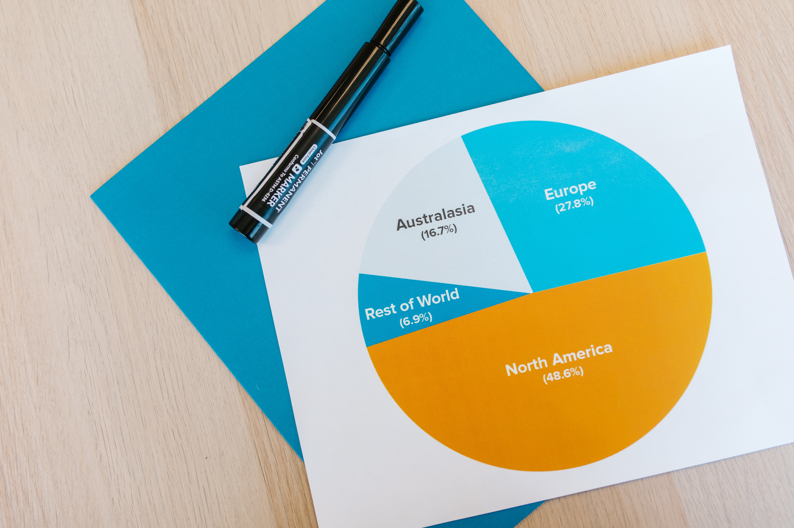

Pie Charts
Pie Chart is one of the methods which is used mostly for Information Transfer. It is always in the form of a circle. It is divided into some sectors. A large information can be converted simply by using Piechart. Budgets, Distribution, Quantity, And More are converted into this form
Steps to convert information a into pie chart
- 1. Read The Information And Keep In Mind
- 2. Make A Circle
- 3. Divide The Circle Into How Many Sections You Want With 100
- 4. Name Each Section With How Much Percent You Want To Give To It
- 5. Make Sure That Your Information And Pie Chart Consisting Similar Data
